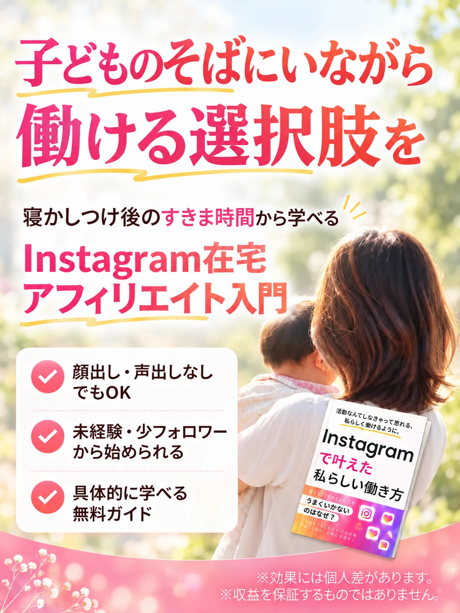
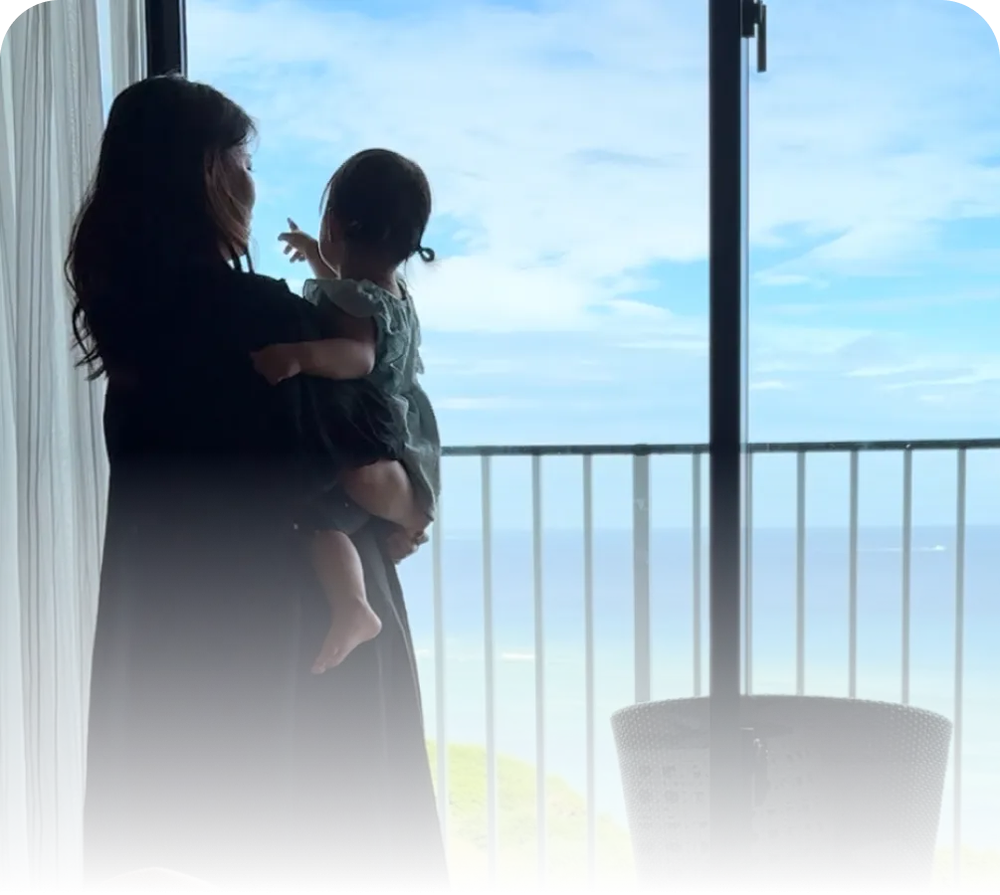
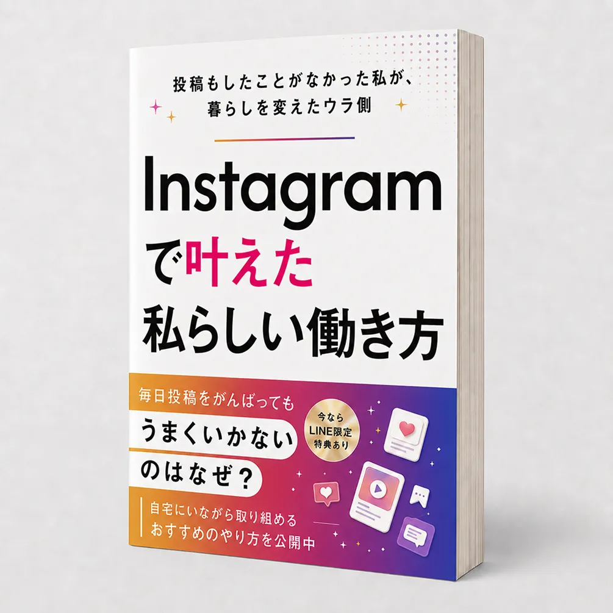
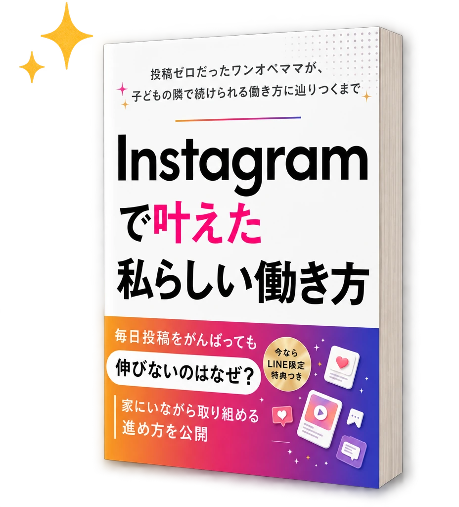
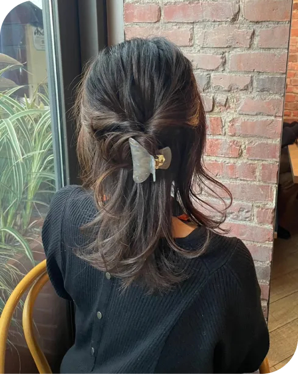

未経験のママが、最初の1か月で
何を・どの順番でやればいいのか。
その順番をまとめた電子書籍を、
LINE登録された方に
無料でお渡ししています。
電子書籍を受け取る
※登録後すぐ受け取れます。いつでも解除できます。
今の働き方に、
少しだけ引っかかっていませんか？
-
仕事よりも子どもとの時間を
もっと優先したい -
子どもの習い事、
あと1つ増やしてあげたい -
家族でもうちょっと
いいランチに行きたい -
自信がもてるスキルを持って
働き方の選択肢を広げたい
お金を気にせず、子どもに
なんでもやってごらんと
言ってあげたい
その答えは、
Instagram×在宅アフィリエイトに
あります。
センスなんか要りません。正しく伸びる順番と型を知っていれば成果を出すことが可能です。
投稿のネタも無理やり作る必要はありません。
暮らしの中で感じたことを発信して共感が得られればあなたの発信は広がっていきます。
たとえば、育児中に助けられたサービス。暮らしを少し楽にしてくれた商品
SNSの特性を理解したうえで身の回りの感じたことを発信すれば成果が表れるスキルです。
- 特別な資格は要りません
- 自分で商品をつくる必要もありません
- フォロワーが多くなくても始められます
やることは決まっている。
だから、未経験から始めてもスキルを
モノにする方が増えているんです。
投稿ゼロだった私も、子育ての合間に
ここから始めました。

私は今も、薬剤師としてフルタイムで働きながら、3歳の娘を育てています。
専業で時間がたっぷりあるわけではありません。
だからこそ、まとまった時間が取れない前提での進め方しかお伝えしていません。
大きく見せることよりも、自分の暮らしに合う形で続けることを大切にしてきました。
なぜ、ポイ活をやめて
Instagramに切り替えたのか。
仕事と子育てを両立する中で「子どもの予定や体調に合わせて働き方を変えられたら」と思う場面が、何度もありました。
家にいてもできる形はないか。そう考えて最初に始めたのがポイ活でした。
けれど、スキマ時間を全部使っても、月に1000円前後。コンビニのおやつ代くらい。
「このまま頑張り続けても、景色は変わらないのかな」——そう感じはじめていました。
そんなときに出会ったのが、
Instagramで発信するという選択肢でした。
最初は
「投稿したこともない私に、
できるんだろうか」
と、何度もためらいました。
それでも少しずつ続けていくうちに、ある日ふと、毎日の景色が変わってきていることに気づきました。
値段を気にせずにカゴに入れられる日。
お金の心配をせずに気兼ねなく行ける旅行。
あれだけ我慢していた美容やおしゃれなランチも楽しめる。
特別な才能ではなく、やり方を知っているかいないかでここまで変わる。
それを自分の生活の中で実感できたことが、いちばんの驚きでした。

この電子書籍は、当時の私と同じように、
今の暮らしを大切にしながら
新しい一歩を考えている方へ
届けたい内容です。
読み終わる頃には、自分には向いているのか、どんな投稿が自分に合ってるかが見えてくるはずです。
電子書籍を受け取る
※登録後すぐ受け取れます。いつでも解除できます。
ママという立場は、ハンデではなく、
いちばんの強みになる。
なぜ、ママにInstagramをおすすめして
いるのか。理由は4つです。
-
1
家から一歩も出ずに取り組める
子どもの発熱で予定が飛んでも、謝る相手がいません。それだけで、毎日の余裕が変わります。
-
2
顔出しや本名を前提にしない
知り合いに知られてしまう心配をせずに始められます。見せ方は自分で選べます。
-
3
作業はスキマ時間で完結する
昼寝中の20分、寝かしつけ後の30分。まとまった時間がなくても前に進む形があります。
-
4
「センス」ではなく「やり方」
才能の話ではありません。やり方を覚えれば、来年も再来年も使えるスキルとして残ります。
こんな働き方も、あったんだ。
そう思える一冊。
今回、LINE登録の方へ、
電子書籍を1冊お渡ししています。

ノウハウを並べた教科書ではありません。
超慎重で、ど堅実。
特別な才能もセンスもなかった
ひとりの女性が、どんなふうに迷い、
選び直し、「家にいながら働く」
という選択肢に辿りついたのか。
そのぜんぶの記録と、
再現するための順番を
まとめました。
-
01
Instagram市場の現状と、
後発でも参入可能な理由 -
02
ポイ活での失敗で学んだ
間違った頑張り方 -
03
ビジネス未経験だった私が
インスタアフィリエイトに辿り着くまで -
04
大きく成果を出した
ママに共通しているコト -
05
知れば思わずやりたくなる！
インスタアフィリエイトをオススメする理由 -
06
効率的にフォロワーを
集めるための差別化戦略 -
07
伸びるPR投稿はこうやるべし
体験談だけでなく、
最初の一歩を踏み出すための
具体的なやり方もまとめています。
- 最初に選ぶテーマの決め方 自分の経験のどこを使うかが決まります
- 誰に何を届けるかの整理法 投稿前に書き出す項目が分かります
- 見るだけのInstagramを「届ける場所」に変える手順 プロフィールから直す順番が分かります
読み終わる頃には、
なんだこんな単純なんだ。私でもできそう。
そんな気持ちが湧いてきます。
何度も言いますが、
知っているか知らないか、それだけが
私の未来を大きく変えてくれました。
あなたも今の働き方を変えたいなら、
まずは知ることから始めてみてください。
電子書籍を受け取る
未経験のママが「最初の1か月に何をするか」全6章／寝かしつけ後の10分から読めます
※登録後すぐ受け取れます。合わないと感じたらいつでも解除できます。
「自分には遠い話」だった人ほど
動き出しています。
※写真はイメージです／お名前は仮名です。
※感じ方や進み方には個人差があります。
インスタ×アフィリエイトを
始めた先の未来、
私はこんなに変わりました。
- 自分のスキルで生活を支えられるようになり、自分に自信が湧いてくる。
- 通帳の残高を気にせず、我慢してた自分の美容や服に気兼ねなく投資できた！
- 心に余裕ができて子どもにも穏やかに接することができるようになった
- 家族との旅行も増えた！憧れの沖縄、宮古島にも行けた
- スーパーの買い物でも値段を気にせず好きなものを買える
- 場所や時間の選択肢が豊富な働き方を選べる
そんな第一歩を、
ここから始めませんか。
Q&A 登録する前の不安に、
先にお答えします。
-
Instagramは見るだけで、投稿したことがありません。
私も同じところから始めました。
電子書籍では「最初に何を考えるか」を順番に整理しています。
操作に慣れていない方でも全体像をつかめる内容です。
-
子どもが小さく、まとまった時間が取れません。
まとまった時間がないことを前提にしています。
考える・書く・整えるを小さく分けて、生活の中に置いていく進め方をお伝えします。
-
顔出しは必要ですか？
必須ではありません。
どんな見せ方が自分に合うかを考えながら、発信の形を整えていきます。
-
本当に無料ですか？あとから請求されませんか？
電子書籍は無料です。費用は一切かかりません。
LINEでは私からの発信をお届けし、有料のご案内をする場合は必ず事前に金額をお伝えします。
合わないと感じたら、いつでも解除できます。
-
家族に言わずに始めても大丈夫ですか？
大丈夫です。
顔出しも本名も必須ではないので、まずは自分のペースで試してから話す、という方も多いです。
-
どんな人に向いていますか？
暮らしを大切にしながら働き方を見直したい方。
感覚だけで進めるより、まず全体像を見てから始めたい方です。
反対に、短期間で大きな変化だけを求めている方には合いません。
今すぐ大きく変えなくていい。
まずは、知るだけでいい。
ここまで読んでくださり、
ありがとうございます。
今すぐ何かを大きく変えなくても
大丈夫です。
まずは、自分にどんな選択肢が
あるのかを知ることから。
電子書籍『Instagramで叶えた
私らしい働き方』が、
その最初の地図になれば
うれしく思います。
まずは、寝かしつけ後の10分で
読み進められるところから。
電子書籍を受け取る
未経験のママが「最初の1か月に何をするか」全6章／寝かしつけ後の10分から読めます
※登録後すぐ受け取れます。合わないと感じたらいつでも解除できます。
Profileプロフィール

大阪在住、3歳の娘を育てながら
フルタイムで薬剤師として勤務。
「子どもとの時間を諦めない働き方」を
模索する中でInstagramに出会う。
「見るだけ・投稿ゼロ」の状態から始め、
家にいながら続けられる形を確立。
現在は同じように「子どもとの時間も、
自分の働き方も諦めたくない」と願うママに、
無理のない進め方を届けています。
おしゃべりとお買い物が大好きな、
ごく普通のアラサーママです。
免責事項
本ページに記載された体験談・事例は個人の結果であり、同等の成果を保証するものではありません。
成果には取り組み方・環境・経験等により個人差があります。
本コンテンツは情報提供・教育を目的としたものであり、収益を約束するものではありません。